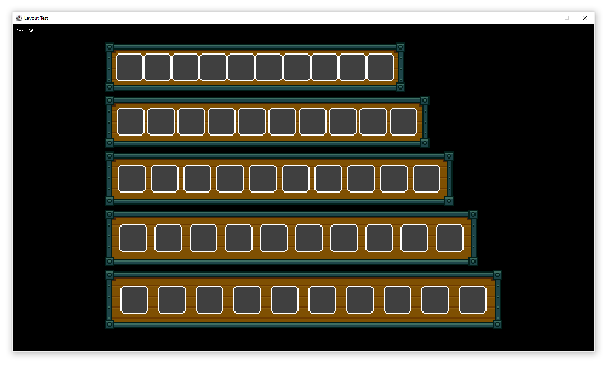
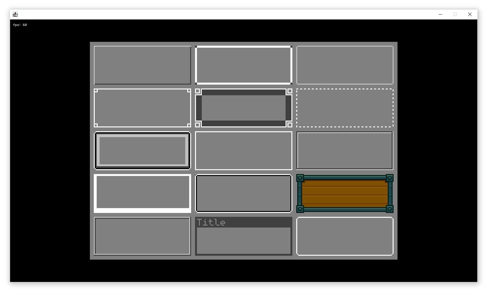
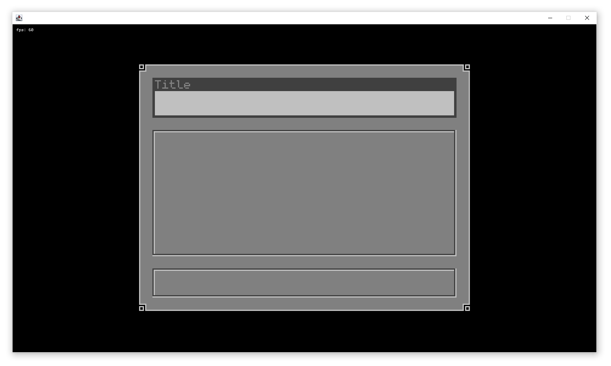
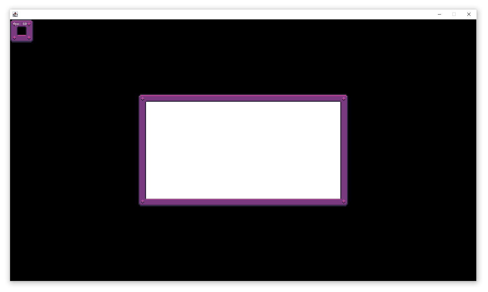

Artifact 2D – Java-2D-Pixelart-UI [Zurück zum Portfolio...]
Artifact 2D ist eine vielseitige Java-2D-Pixel-Library mit integriertem Layout-Management und einer umfangreichen Auswahl an Pixel-Borders. Die Bibliothek bietet eine flexible UI-Struktur, mit der sich Pixel-artige Benutzeroberflächen effizient gestalten lassen.
Features
- Modulares Layout-Management mit Ankerpunkten (Anchor-Based Layout)
- Umfangreiche Auswahl an Pixel-Borders für klassische Retro-UI-Elemente
- Padding- und Border-Management für UI-Komponenten
- Einfache Integration und Erweiterbarkeit



Nine-Slice Borders
Nine-Slice Borders sind eine Technik zur skalierbaren Darstellung von UI-Elementen, ohne dass dabei die Pixel-Grafik verzerrt wird. Eine Grafik wird in neun Bereiche unterteilt: vier Ecken, vier Kanten und eine Mitte. Während die Ecken unverändert bleiben, werden die Kanten nur in eine Richtung (horizontal oder vertikal) gestreckt, und die Mitte wird skaliert, um das Element flexibel an verschiedene Größen anzupassen.
Diese Methode ist besonders nützlich für Fenster, Buttons oder Panels, die sich dynamisch vergrößern oder verkleinern müssen, während ihr Pixel-artiger Stil erhalten bleibt.
